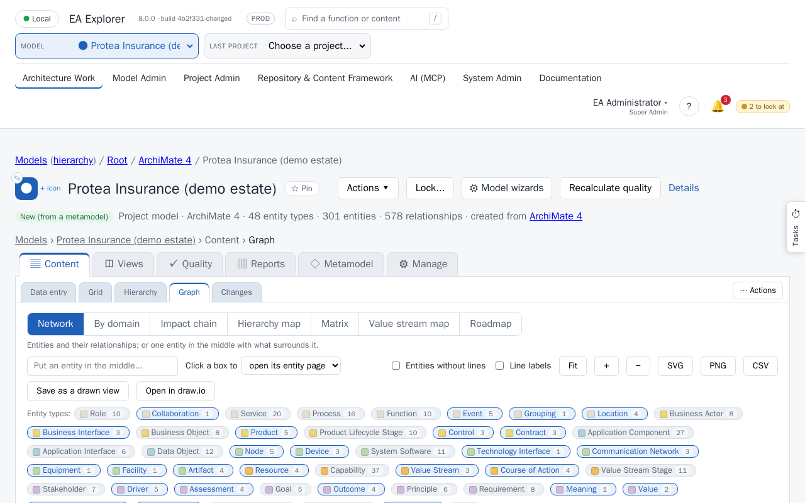

See the impact of a change
For: Practising architects, Executives
What an entity leads to, or depends on, up to six steps.

#/metamodel/{m}/graphWhy do this
Before retiring an application or changing a process, you need to know what depends on it, and what that depends on in turn. Impact analysis follows relationships up to six steps and shows the whole chain. It is one of the main reasons to keep a repository. See What enterprise architecture is for.
Views and reports are where the model meets its audience. Choose the one that answers the question in front of you, for the person in front of you, and it stays current as the model changes.
In TOGAF terms: Architecture views and viewpoints: artifacts that address stakeholders' concerns, in any ADM phase. See EA Explorer and the TOGAF Standard.
The goal: You see everything a change would affect.
Steps
- Open the model's Graph on the entity.
- Choose impact: what it leads to, what depends on it, or both.
- Read the result; save it as a drawn view if you like.